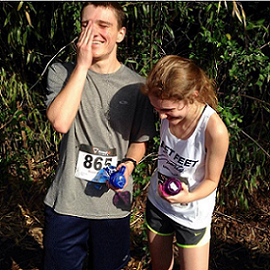

I was born in Greenville, South Carolina and have lived here all my life. My dad was transferred here for his job before my brother and I were born and there has been no reason for us to leave. When I was five, I began to attend Plain Elementary for kindergarten and stayed until second grade. In third grade, I was invited to attend Charles Townes Center for the rest of my elementary and middle school years. I was accepted and attended CTC until eighth grade. Then I applied for the science magnet program at JL Mann High School. I was accepted and have attended school here ever since. I never played any sports but I did attend summer camps at Roper Mountain Science Center.
Even though everything at home is the same, one thing has changed the way I go about my day. My brother is away for his first year at college and I am so happy that he is becoming successful in life. Speaking of school, I am now a junior in high school and am stressed out. I am taking three AP credit classes and each one has their bucket load of work. Even when school gets stressful, one of my classes, AP Biology, teaches genetics in the curriculum and I cannot wait to get to that chapter. I find that genetics makes sense to me and explains why things are how they are when it comes to humans.
Another thing that I am enjoying lately is working out. I do run cross country but lately I have been injured and have had to take it easy, so I have been biking and doing exercises on TRX straps. Basically, when doing TRX, an instructor at the YMCA tells me and the rest of the class what exercises to do on TRX straps. This exercise builds my core, arms, and legs which all benefit me while running and/or recovering from injuries. While working out, I can get my mind off of all of the things that I have to do and makes me feel stronger. I do not plan on doing anything with cross country during college, but for now it keeps me in shape.
Some exercises that I have found appealing are rowing and kayaking. I went on a trip to Saluda Lake with the Outdoors Club at JL Mann and we kayaked for the entire day. This activity also works my core and arms which, like TRX, strengthens me during cross country. My brother also went with me on the trip and has now joined the rowing team at the college he is attending and loves it. So, I have gone kayaking a couple more times and have enjoyed it tremendously. My brother says that the rowing team trains a lot and takes time away from school/studying. But I feel like if it makes me happy and keeps me in shape, rowing is definitely something that has captures my interest.
After I graduate high school, I will go to Clemson University because my brother goes here and the campus seems beautiful and the place for me. When attending Clemson, I will study genetics because I love finding out things about the genetic code that makes each human truly unique. I will also live with my brother in an apartment next to campus after my freshman year. I will not be rushing to pledge for a sorority but I will be involved in as many activities and clubs as I can. I would love to have a job on campus maybe in my sophomore or junior year. I want to be making at least a little money in order to pay for college and any other excursion that may occur during or after college.
After college, I plan to travel the world with my family to spend time with them before I move out on my own. I want to travel to places like Australia and Europe. I want to get a job in genetics, preferably a teaching job which require more education but I would love to share the exciting elements of genetics with students. I do not want to work in a genetics lab because I feel like I would not have the chance to make a lasting impact. I do plan to have a family after college and after I find a stable job.